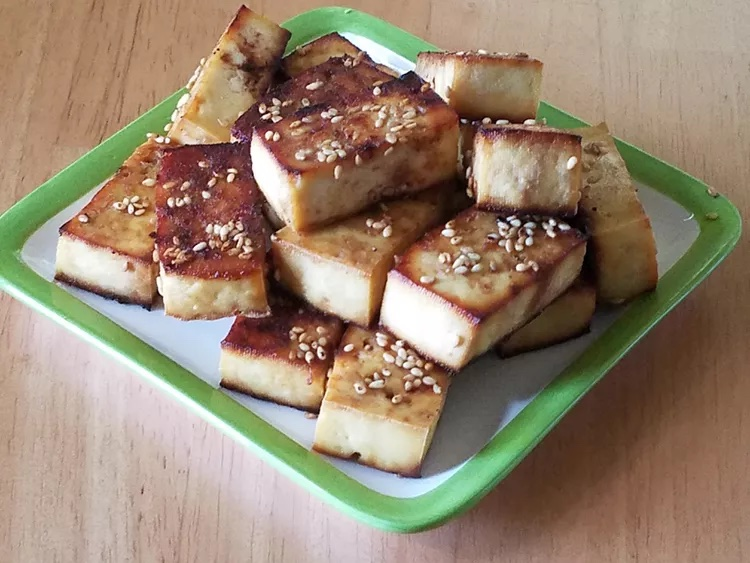

Baked Tofu

Description
Delicious warm or cold. A staple for every vegan kitchen!
Ingredients
- 1 pound tofu, sliced into 8 even pieces
- 2 tablespoons soy sauce
- 2 tablespoons agave nectar
- 1 tablespoon toasted sesame oil
- 1 teaspoon minced garlic
- 1 teaspoon minced fresh ginger
- 1 tablespoon sesame seeds, or to taste
Steps
- Preheat oven to 350 degrees F (175 degrees C). Lightly oil a large baking sheet.
- Gently press tofu pieces to release as much water as possible. Arrange tofu on the prepared baking sheet.
- Whisk soy sauce, agave nectar, sesame oil, garlic, and ginger together in a bowl until marinade is evenly combined. Brush half of the marinade over tofu pieces.
- Bake in the preheated oven for 30 minutes. Flip tofu and brush remaining marinade over tofu. Sprinkle sesame seeds over tofu. Continue baking until tofu is crisp, about 30 minutes more. Transfer tofu to a wire rack using a spatula; cool.